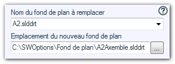

Opération possible sur les mises en plan.
Cette opération modifie le fond de plan des feuilles dont le format est spécifique.
Exemple : Si le fond de plan est "A2.slddrt" alors l'opération consiste à le remplacer par le fond de plan "A2Axemble.slddrt".
